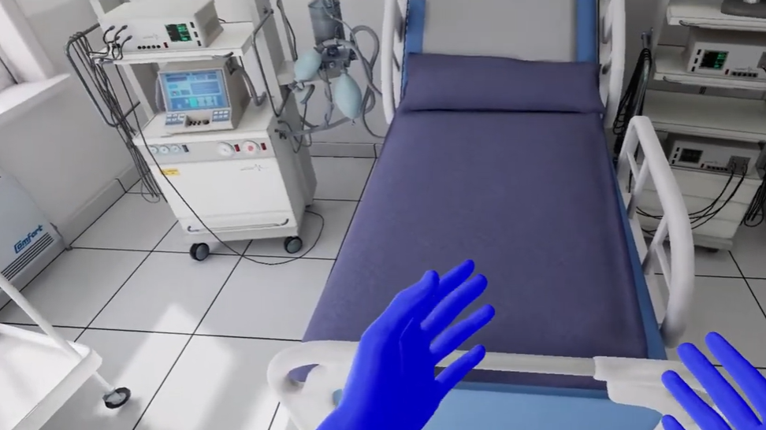

Unreal Engine developer & technical lead
Virtual worlds.
Real-world impact.
I’m Ateeque Ur Rehman. I build immersive games and training simulations that bring complex interactions to life.
From healthcare and industrial training to multiplayer VR, I take Unreal Engine systems from prototype to production.
Hyderabad, Pakistan / Working across time zones
 Ateeque Ur RehmanUnreal Engine · VR / XR
Ateeque Ur RehmanUnreal Engine · VR / XR
5+Shipped VR titles
500+Nurses using Medic VR
20Concurrent VR trainees
Built with Unreal Engine.
Delivered on Quest & PC.
 Watch gameplay ↗
Watch gameplay ↗Consumer VR / Meta Quest
The Final Overs
Bringing the cricket pitch into VR, with telemetry and analytics that help the team understand players and improve the game.
- My contribution
- Gameplay telemetry, REST API integration, event logging and live dashboards.
- Role
- Systems Developer
View on Meta Quest ↗
Watch demo ↗Healthcare / Scenario Developer
Medic VR
15+ guided procedural scenarios, helping more than 500 nurses practise clinical workflows in a repeatable environment.
 Watch demo ↗
Watch demo ↗Enterprise XR / Scenario Developer
GraspXR
Modular training scenarios across healthcare, industry and education, with multilingual content and integrated feedback.
02 / Expertise
The systems behind
the experience.
Practical engineering for interactions that feel natural and simulations that hold up in production.
01Immersive interaction
Hand and eye tracking, passthrough, haptics and physics-driven input systems.
OpenXRBlueprintsC++
02Simulation architecture
Branching scenarios, multi-user sessions, procedural guidance and real-time feedback.
Training systemsMultiplayer
03Production performance
GPU and CPU profiling, memory budgets, asynchronous loading and standalone Quest optimization.
Unreal Engine 5Meta Quest
Oct 2022 — Present · Mixeal
Unreal Engine Expert / Technical Lead
Led UE4.27 to UE5 migration, built production XR simulations, and restored performance for Quest delivery.
Jan 2022 — Oct 2022 · Mixeal
Unreal Engine / VR Developer
Delivered VR features, resolved standalone rendering bottlenecks, and developed reusable interaction systems.
Jan 2019 — Present · GETS Non-Profit
Web Development Teacher (Volunteer)
Teaching practical web development through project-based learning and technical coaching.